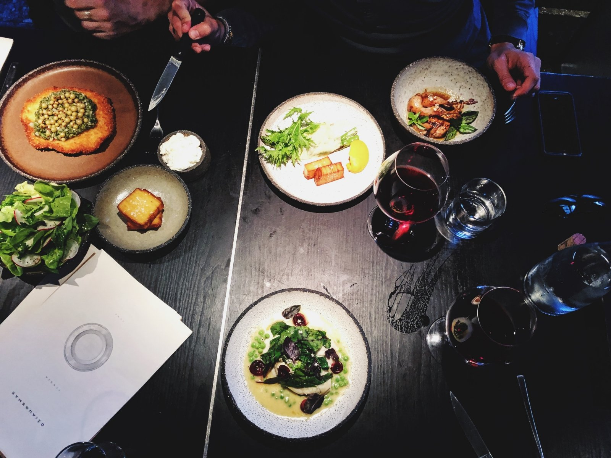
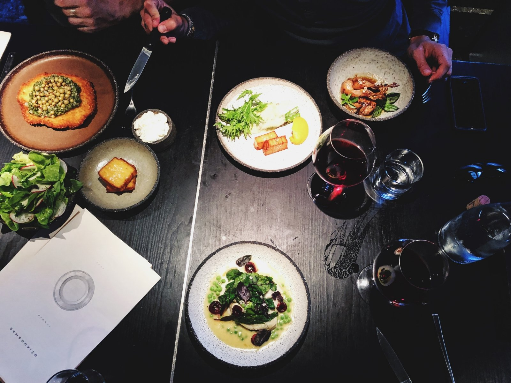

Restoranas - Drevernos uostas
2020.10.27 13:30

LT EN DE RU Apie Dreverną Uostas Kempingas Restoranas Keltas Pobūvių salė Laivų nuoma Vandens pramogos Kontaktai LT EN DE RU Uostas Kempingas Restoranas Keltas Pobūvių salė Laivų nuoma Vandens pramogos Kontaktai Apie Dreverną
Restoranas
Galerija
Kviečiame apsilankyti restorane „Dreverna“ , kuriame rafinuotas patiekalų meniu ir elegantiškas pateikimas nustebins ir pakerės, o dauguma mūsų žuvies patiekalų gaminami iš šviežios, vietos žvejų sugautos žuvies.
Tai vieta kavos puodeliui ar romantiškai vakarienei vasaros terasoje su vaizdų į jachtų uostą ir Mirusias kopas. Puiki vieta atvykti šeimai, pavalgyti verslo pietus arba surengti asmeninę šventę restorane priimame iki 150 žmonių.
Jūsų asmeninės šventės pobūvį taip pat galime surengti atskiroje Elingo salėje, kurioje komfortiškai telpa iki 60 žmonių.
Pajuskite laisvą, gaivią ir skandinavišką atmosferą apsilankę jachtų uosto restorane „Dreverna“.
Užsakymus priimame telefonu +370 60480108
Pagrindinis patiekalų meniu
Pusryčių meniu
Gėrimų meniu
REZERVACIJA
+370 60480108
Laivų nuoma Vandens kruizai (tik grupėms) Vandens dviračių, valčių, irklenčių, baidarės nuoma Baidarių nuoma (tik grupėms) Pobūvių salėREZERVACIJA
+370 60480108
Uostas Kempingas Restoranas Keltas Pobūvių salė Laivų nuoma Vandens pramogos Uostas Kempingas Keltas Vandens pramogos Poilsio nameliai Laivų nuomaPamario g. 12, Dreverna
55°31’04,0″ 21°13’10,3″
© DREVERNA Mažųjų laivų uostas 2020 Slapukai padeda užtikrinti, kad ateityje Jūsų apsilankymai šioje svetainėje būtų patogesni. Toliau naršydami šiame puslapyje Jūs sutinkate su šio puslapio privatumo politika. Sutinku- Restoranas - Vanagupė
- Armėniškas restoranas | Grill Patiekalai | Armenian Grill
- Restoranas Natali - Event guru
- Bizarre Restoranas ir Baras - Tavo pasaulis senamiesčio ...
- Restoranas Panevėžyje „Déjà vu“ - Viešbutis „Romantic ...
- Restoranas - Drevernos uostas
- Restoranas - ORO Dubingiai
- Kuchmistrai - Didikų virtuvė
- 30 Geriausių restoranų - 2019 - Nr.1 - Džiaugsmas
- Unikalioje Senamiesčio vietoje įsikūrė naujasis L ...
- Restoranas - Vanagupė
Beje, visi pagrindiniai ingredientai čia yra lietuviški: „Galima sakyti, esame Tymo turgaus restoranas – apie 70 proc. produktų keliauja iš ten“, – išduoda Martynas. Be to, šis restoranas tobulėja ne metais, o mėnesiais: „Pats pastebiu, kad dabar daug geriau vytiname mėsą, rauginame daržoves ir pan.
- Armėniškas restoranas | Grill Patiekalai | Armenian Grill
Restoranas. Europietiškų tradicijų virtuvė, vertinantiems gurmanišką ir sveiką maistą . Kviečiame apsilankyti jaukiame restorane, kuris puikiai įvertintas nuolatinių mūsų svečių. Rytais čia kviečiame paskanauti gausių ir gardžių pusryčių, dienos metu greitai papietauti, vakare – jaukiai pasimėgauti europietiškos ...
- Restoranas Natali - Event guru
ŠEŠTADIENIAIS restoranas nedirba, bet savo siūlomus DIENOS PIETŲ patiekalus, užsakytus per www.MOKSLININKU.lt svetainę, pristatome beveik KIEKVIENĄ DIENĄ (I-VI) nuo 11 iki 17 val. Pagrindiniai patiekalai. Vištienos kumpeliai. € 3.90. saldžiarūgščiame padaže, pateikiami su ryžiais.
- Bizarre Restoranas ir Baras - Tavo pasaulis senamiesčio ...
Esame armėniškas restoranas kuriame teikiami nuostabūs armėniško tipo grill patiekalai. Štai delfi nuoroda, kurioje yra aprašytas apsilankymas mūsų restorane – Staipsnis 1. Taip pat mūsų šefai yra puikūs savo srities ekspertai, kurie puikiai žino apie nuostabų maistą.
- Restoranas Panevėžyje „Déjà vu“ - Viešbutis „Romantic ...
Sveiki atvykę! Restoranas „KUCHMISTRAI“ – autentiškoje Zyplių dvaro aplinkoje įkurtas ir Lietuvos didikų virtuvės paveldą puoselėjantis restoranas, siekiantis išsaugoti ne tik kulinarinį, bet ir kultūrinį krašto paveikslą.
- Restoranas - Drevernos uostas
Restoranas Galerija Kviečiame apsilankyti restorane „Dreverna“ , kuriame rafinuotas patiekalų meniu ir elegantiškas pateikimas nustebins ir pakerės, o dauguma mūsų žuvies patiekalų gaminami iš šviežios, vietos žvejų sugautos žuvies.
- Restoranas - ORO Dubingiai
SAKARTVELO Esame gruziniškas restoranas, teikiantis nuostabų, autentišką gruzinų maistą. Kokybę „Sakartvelo“ garantuoja rinktiniai produktai ir net tokie niuansai, kaip mėsos paruošimas tik pačių gruzinų, kurių maisto kokybė yra nepalyginamai aukštesnė. Dabar gruzinišką maistą galite užsisakyti ir į namus! Užsisakyti! meniu Gruzinų restoranas Kas tas sakartvelo?
- Kuchmistrai - Didikų virtuvė
Restoranas „Onorė“ pasitiks nuo pat ankstyvo ryto ir bus pasiruošęs Jus palepinti. Nesvarbu, ar tai darbingos dienos pradžia su puodeliu stipraus espresso, ar tingūs savaitgalio pusryčiai su čia pat iškeptomis bandelėmis ir garuojančiu omletu.
- 30 Geriausių restoranų - 2019 - Nr.1 - Džiaugsmas
2018-06-20 Paskelbtas geriausias pasaulio restoranas, o jau kitą savaitę paaiškės ir Lietuvos Vakar Ispanijos Bilbao mieste nuaidėjo pasaulio restoranų apdovanojimų ceremonija. Specialaus renginio metu buvo paskelbtas kasmetinis 50 geriausių pasaulio restoranų sąrašas (The World‘s 50 Best Restaurants), o pirmoje vietoje šiemet ...
- Unikalioje Senamiesčio vietoje įsikūrė naujasis L ...
Bizarre restoranas yra įsikūręs pačioje senamiesčio širdyje. Trys skirtingos virtuvės - trys skirtingos patirtys ir nepamirštami įspūdžiai.
Beje, visi pagrindiniai ingredientai čia yra lietuviški: „Galima sakyti, esame Tymo turgaus restoranas – apie 70 proc. produktų keliauja iš ten“, – išduoda Martynas. Be to, šis restoranas tobulėja ne metais, o mėnesiais: „Pats pastebiu, kad dabar daug geriau vytiname mėsą, rauginame daržoves ir pan.
Restoranas. Europietiškų tradicijų virtuvė, vertinantiems gurmanišką ir sveiką maistą . Kviečiame apsilankyti jaukiame restorane, kuris puikiai įvertintas nuolatinių mūsų svečių. Rytais čia kviečiame paskanauti gausių ir gardžių pusryčių, dienos metu greitai papietauti, vakare – jaukiai pasimėgauti europietiškos ...
ŠEŠTADIENIAIS restoranas nedirba, bet savo siūlomus DIENOS PIETŲ patiekalus, užsakytus per www.MOKSLININKU.lt svetainę, pristatome beveik KIEKVIENĄ DIENĄ (I-VI) nuo 11 iki 17 val. Pagrindiniai patiekalai. Vištienos kumpeliai. € 3.90. saldžiarūgščiame padaže, pateikiami su ryžiais.
Esame armėniškas restoranas kuriame teikiami nuostabūs armėniško tipo grill patiekalai. Štai delfi nuoroda, kurioje yra aprašytas apsilankymas mūsų restorane – Staipsnis 1. Taip pat mūsų šefai yra puikūs savo srities ekspertai, kurie puikiai žino apie nuostabų maistą.
Sveiki atvykę! Restoranas „KUCHMISTRAI“ – autentiškoje Zyplių dvaro aplinkoje įkurtas ir Lietuvos didikų virtuvės paveldą puoselėjantis restoranas, siekiantis išsaugoti ne tik kulinarinį, bet ir kultūrinį krašto paveikslą.
Restoranas Galerija Kviečiame apsilankyti restorane „Dreverna“ , kuriame rafinuotas patiekalų meniu ir elegantiškas pateikimas nustebins ir pakerės, o dauguma mūsų žuvies patiekalų gaminami iš šviežios, vietos žvejų sugautos žuvies.
SAKARTVELO Esame gruziniškas restoranas, teikiantis nuostabų, autentišką gruzinų maistą. Kokybę „Sakartvelo“ garantuoja rinktiniai produktai ir net tokie niuansai, kaip mėsos paruošimas tik pačių gruzinų, kurių maisto kokybė yra nepalyginamai aukštesnė. Dabar gruzinišką maistą galite užsisakyti ir į namus! Užsisakyti! meniu Gruzinų restoranas Kas tas sakartvelo?
Restoranas „Onorė“ pasitiks nuo pat ankstyvo ryto ir bus pasiruošęs Jus palepinti. Nesvarbu, ar tai darbingos dienos pradžia su puodeliu stipraus espresso, ar tingūs savaitgalio pusryčiai su čia pat iškeptomis bandelėmis ir garuojančiu omletu.
2018-06-20 Paskelbtas geriausias pasaulio restoranas, o jau kitą savaitę paaiškės ir Lietuvos Vakar Ispanijos Bilbao mieste nuaidėjo pasaulio restoranų apdovanojimų ceremonija. Specialaus renginio metu buvo paskelbtas kasmetinis 50 geriausių pasaulio restoranų sąrašas (The World‘s 50 Best Restaurants), o pirmoje vietoje šiemet ...
Bizarre restoranas yra įsikūręs pačioje senamiesčio širdyje. Trys skirtingos virtuvės - trys skirtingos patirtys ir nepamirštami įspūdžiai.
 
